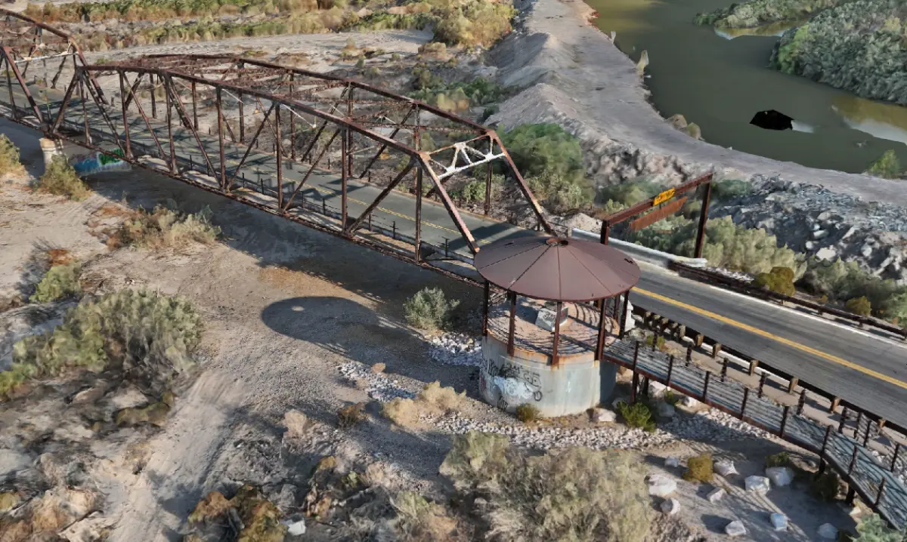
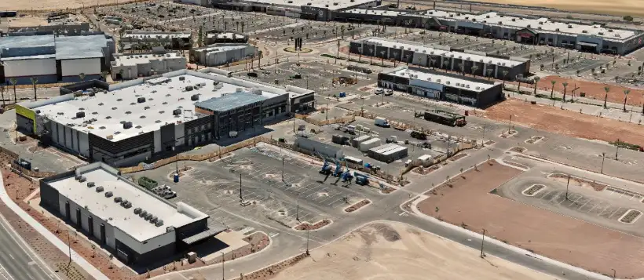
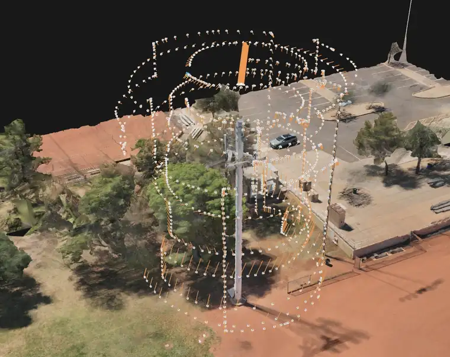

A ninety-year-old bridge, an active retail build, and a tower nobody had to climb.
Two Arizona sites with almost nothing in common except the discipline applied to them. One is a steel truss carrying a county road over the Gila. The other is a commercial development going up a few miles from our door. Both were controlled, both were verified, and both can show you where the numbers came from.
SITEGillespie Dam Bridge
Old US 80 over the Gila River
Arlington, Maricopa County
STRUCTUREMulti-span steel through truss
Opened 1 August 1927
National Register, 5 May 1981
METHODAerial photogrammetry fused with
terrestrial lidar on accessible spans
RTK control from an occupied base
PPK run as an independent solution
Check points withheld from the solve
Gillespie Dam Bridge
One of only two surviving multi-span steel through truss bridges in Arizona, and the main line of US 80 until the 1956 realignment. In 1993 the Gila River destroyed Gillespie Dam outright. The bridge stayed up. Some piers settled and that was the extent of it, because the truss held and the piers were founded in bedrock.
This is the project where the method was tightened. Control from a base station we occupied ourselves, ground control in the solve, and check points deliberately held out of it, because a point used to build the model cannot also be the point that grades it. PPK was then run as a completely separate solution, so the site produced two independent answers to compare rather than one answer to trust.
Aerial capture was fused with terrestrial lidar on the portions that could be reached on foot, giving close-range detail on connections and bearing seats that an aerial pass alone will not resolve.

Textured reconstruction, Gillespie Dam Bridge. Aerial photogrammetry fused with terrestrial lidar on reachable spans.
SITEVerrado Marketplace
Buckeye, Maricopa County
Section 31, T2N R2W
TYPECommercial retail development
Active construction
METHODRecorded plat traverse reduction
Predicted monument positions
Field recovery and RTK occupation
Aerial capture flown to control
Verrado Marketplace
A retail development under construction in Buckeye, on a replat whose boundary was already recorded. That record is an asset most aerial jobs ignore.
Before flying, the plat's line and curve tables were reduced from bearing and distance into predicted positions for every monument called out on it. Brass caps, rebar, found pins. Those positions are not measurements and we do not present them as such. They are search locations, accurate enough to put a crew within arm's reach of a monument instead of sweeping a corner with a shovel.
The crew then recovered what was actually there and occupied it with RTK. Only at that point does a coordinate become a measurement, and only the occupied ones went into the solve. Anything predicted but not found was recorded as not recovered rather than quietly dropped.

Verrado Marketplace during construction. Flown to recovered monument control rather than to the aircraft's own position estimate.
Axis Fields was profiled by an Embry-Riddle Aeronautical University student for a UAS remote sensing course in June 2026.
It is worth being precise about what that is. The report was written from correspondence with the founder rather than an independent audit of our data, and it predates the tier structure described on this site. We are posting it in full anyway, because an outside description of the company is worth reading and because the source discipline we apply to coordinates applies to our own marketing too.
Report by Brandon Stringer. Published with permission. Acknowledgement of the author's institution does not constitute or imply endorsement by Embry-Riddle Aeronautical University.
SITECommunications tower
Monopole with sectored arrays
Arizona
TYPEVertical asset inspection
Equipment inventory and condition
METHODClose-range orbital photogrammetry
Stacked orbits at multiple elevations
Several hundred camera stations
Reconstruction, no climb required
Communications tower
A vertical asset will not survive the flight plan you would use on a parcel. A nadir grid sees the top of a monopole and almost nothing of the thing you actually need, which is the equipment hanging off its sides.
So the aircraft flies stacked orbits at multiple elevations, close in, with the camera looking inward and overlap held high enough that antennas, mounts, coax runs and the shelters below all resolve. The white lattice in the image is the recovered camera positions. That geometry is the plan, not an accident of flying.
What it buys the asset owner is an inventory and condition record of everything mounted on the structure, captured without sending a climber up and without taking the site out of service.

Reconstructed monopole with recovered camera stations shown. Coverage at this density is what lets mounted equipment resolve.
What the three have in common
None of these models is anchored to a guess.
A bridge from 1927, a retail pad poured last quarter, and a monopole carrying live equipment all need the same thing from us: control that was occupied, check points that were withheld, and a written record of which is which.
Change the site, change the sensor, change the deliverable. The chain does not change.